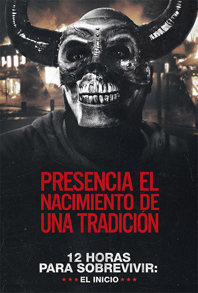

The Purge 4
|

|
Detalles
Un partido político en Estados Unidos llega al poder y lleva a cabo un experimento: ninguna ley durante 12 horas en Staten Island. Nadie es obligado a permanecer en la isla, pero se le dará 5000 dólares a los que se queden.
|